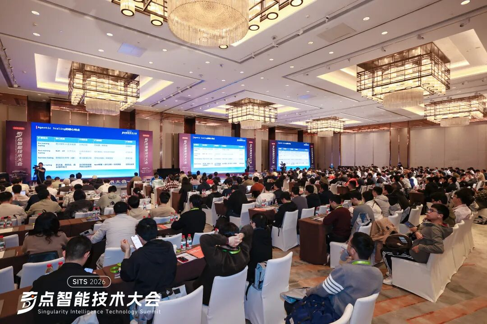
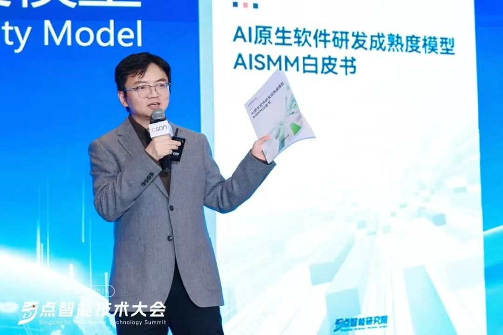
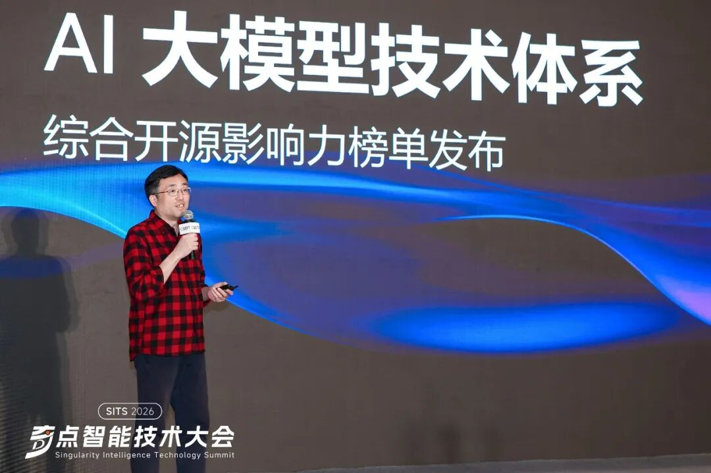
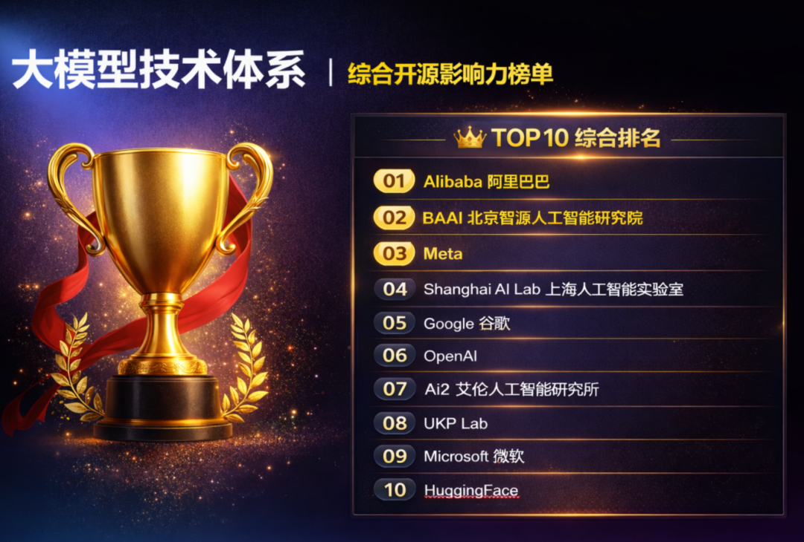
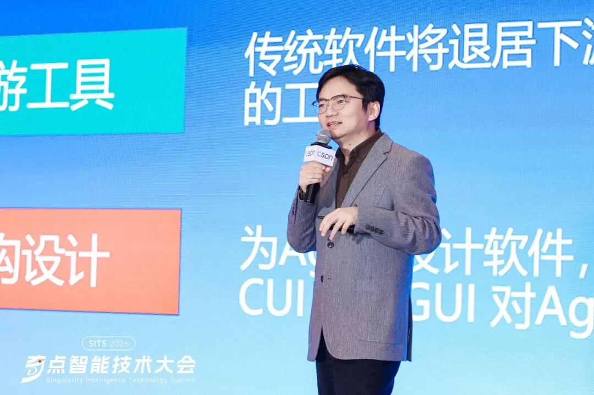
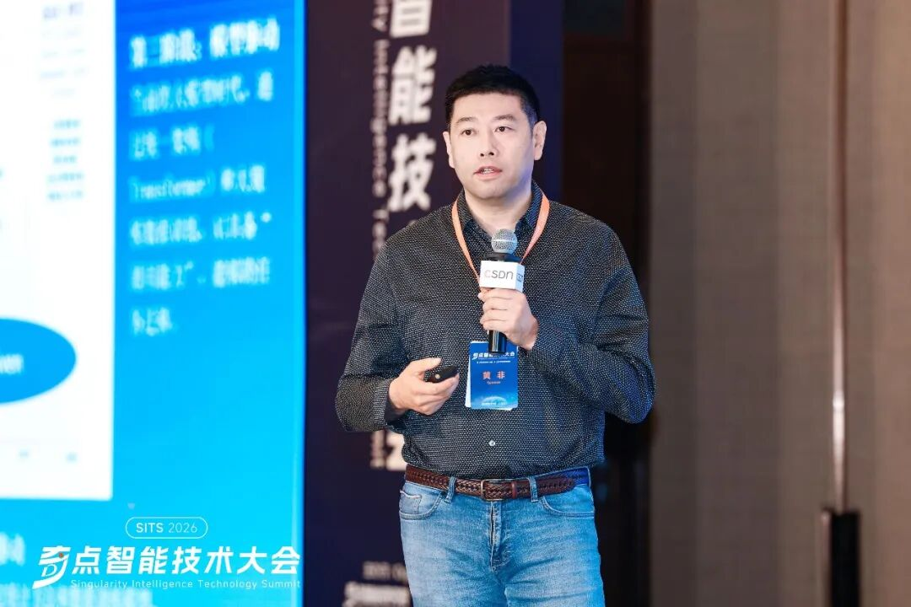
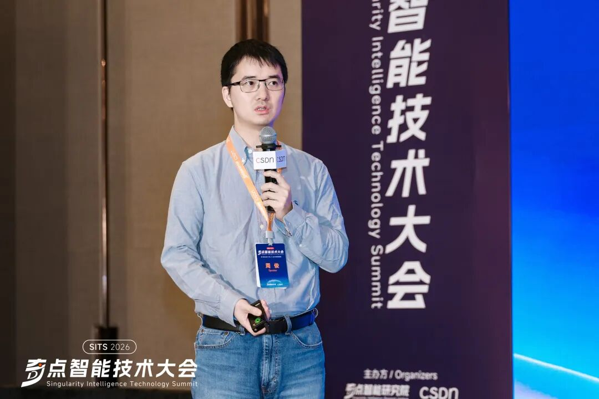
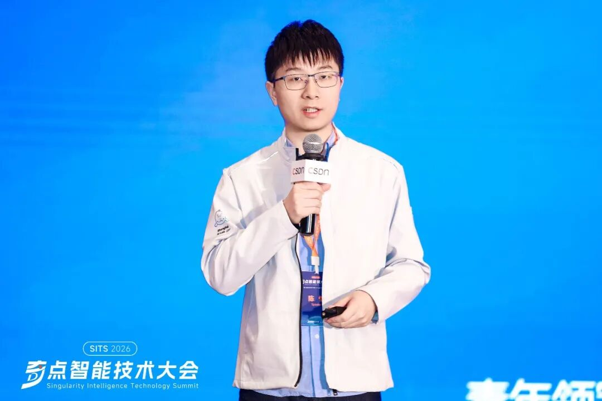
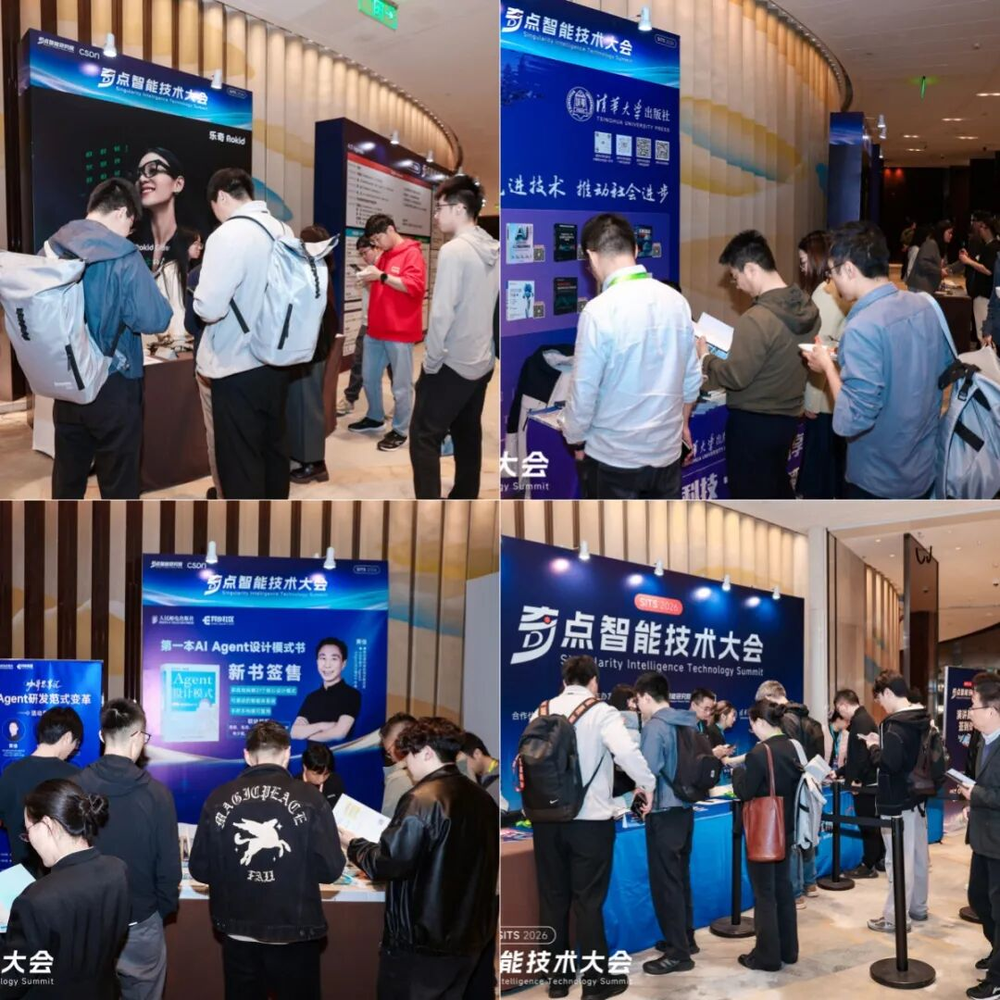

2026 年，关于人工智能的讨论，已经明显进入了一个新的阶段：
从全民“养虾”式的工具热潮，到围绕 skills 与真实任务执行的再定义；
从“能不能做”的能力验证，走向“如何规模化落地”的系统工程；
从单点模型能力比拼，转向以 Agent 为核心的系统性重构。
软件形态、交互方式乃至整个互联网产业的运行逻辑，都在被重新定义。在这样的背景下，由 CSDN 与奇点智能研究院联合举办的「2026 奇点智能技术大会」于 4 月 17 日正式开启，围绕技术拐点与产业路径展开集中讨论，也试图为行业从业者提供更深层次的理解与思考路径。
今天上午的主会场，奇点智能研究院院长、CSDN 高级副总裁李建忠，荣耀终端 AI 首席科学家、首席人工智能官（CAIO）黄非，蚂蚁集团副总裁、国家级创新领军人才周俊，上海人工智能实验室青年领军科学家、大模型中心负责人陈恺等重磅嘉宾，围绕大模型演进、推理能力跃迁以及 Agent 产业生态等方向，分享了各自的最新观察与实践进展。
座无虚席的会场内，讨论氛围持续高涨。

接下来我们精彩呈现这场大会首日的核心亮点，还原这半天最值得关注的技术观点与关键行业信号。
白皮书 × 评测体系 × 开发者社区，一场关于 AI 软件研发的三重奏
本次大会上，奇点智能研究院院长、CSDN 高级副总裁李建忠重磅发布《AI 原生软件研发成熟度模型AISMM白皮书》。该白皮书由奇点智能研究院专家团队，基于丰富的行业客户咨询案例、并融合业界最佳实践，在 AI 软件研发领域的重要阶段性成果。

从内容来看，这份白皮书不仅是对 AI 介入软件研发全过程的系统性梳理，更试图为行业提供一条清晰的演进路径。报告围绕研发流程、组织架构、基础设施与工具链等多个层面，系统提出变革要求与落地路径。在李建忠看来，尽管当前 AI 软件研发呈现出快速繁荣的态势，但在企业实际落地过程中，仍普遍面临组织协同、流程重构与工程范式切换等挑战，因此白皮书的重点之一，正是回答“如何真正走向 AI 原生研发”这一核心问题。
整份白皮书共分为五大章节，涵盖 AI 重塑软件全新范式的变局、AISMM 全景解读、AI 原生软件工程的核心变革剖析、企业现状与行业格局评估，以及技术趋势与价值主张的展望。在大会现场，李建忠还基于白皮书内容，分享了对 2026 年 AI 产业变革的十二大前沿趋势判断，覆盖计算、开发与应用三大范式：
趋势 1：推理算力的池化、异构与弹性调度
趋势 2：云计算服务模式的深度重构：从 IaaS/PaaS/SaaS 到 Token Factory/MaaS/AaaS
趋势 3：端云协同的 AI 计算架构走向成熟
趋势 4：Token 经济学从应用技巧升维为基础设施工学
趋势 5：自主软件工程的边界持续拓展
趋势 6：Harness的成熟和进化：手工配置到 AI 辅助与自动优化
趋势 7：开发工具和基础设施从人类中心走向 Agent 原生
趋势 8：即时软件快速增长，柔性软件走向工程化成熟
趋势 9：Agent 成为用户交互第一入口，传统软件下游化
趋势 10：生成式用户界面（GenUI）为用户提供更个性化体验
趋势 11：Agent 将互联网从信息网络重构为行动网络
趋势 12：自然语言交互 + Agent 网络为多元设备提供人机界面
李建忠表示，未来白皮书将持续迭代，进一步吸纳国内同行的实践案例，打造开放性的研究成果，助力中国技术人在 AI 与软件研发范式变革中持续贡献力量。
在白皮书发布之后，大会进一步将视角从“方法论框架”延展至“行业评价体系”。奇点智能研究院开源技术委员会主任、华东师范大学数据科学与工程学院教授王伟在现场发布了《AI 大模型技术体系综合开源影响力榜单》，并对其评测体系进行了系统解读。

王伟指出，奇点智能研究院延续去年工作，对 AI 大模型评测榜单进行了持续更新与迭代。该评测体系突破了单一性能维度的局限，从数据、模型、测评与系统四个维度构建综合评价标准，覆盖 53 个核心指标，数据来源于 17 个平台的 13,541 个链接。相关评测方法论及部分数据集已在 GitHub（https://GitHub.com/brucecui0120/OSIR-LMTS ） 和 GitCode（https://GitCode.com/brucec/OSIR-LMTS ）开源，并采用同行协同迭代的方式持续优化。
此次发布的评测榜单包含三大分榜单及一个综合榜单。从结果来看，据大模型技术体系开源影响力模型分榜单显示，国际企业在模型性能方面整体表现突出，但中国在模型开源整体实力上已超越美国。数据分榜单显示，北京智源人工智能研究院、艾伦人工智能研究院等中立非营利机构在开源数据集建设方面较为活跃，而企业则更多将数据作为核心竞争力加以保护。系统分榜单更聚焦各机构在软件体系、工具链及硬件支撑等基础设施层面的开放程度。综合榜单则对各维度进行加权汇总，阿里、智源、Meta、上海人工智能实验室等机构位居前列。

在方法体系与行业评测逐步完善的基础上，大会也将关注点延伸至开发者生态建设。王伟在现场宣布，「Al DSpace」AI 开发者空间站正式成立。该社区由多位技术专家以个人名义联合发起，定位为面向海内外技术专家的硬核 AI 开发者社区，旨在连接产业与学术、专家与初学者，推动更高密度的技术交流与实践协作。
从目标来看，该社区主要围绕三个方向展开建设：
其一，坚持社区驱动理念，不仅汇聚行业顶级技术专家，更广泛吸纳在校生、初入职场者等新生力量参与社区建设。同时发挥连接器作用，搭建技术专家与入门从业者之间的沟通桥梁，采用“专家领衔、志愿者驱动”的参与机制，打造人人可贡献的开放生态。
其二，打造一站式内容与资源平台，整合硬核干货精选、线上线下立体化活动，以及本次大会发布的白皮书等独家资源，为开发者提供全方位支撑。
其三，实现全栈技术与产业版图的覆盖，涵盖 AI 全链路、产业实践、底层基础设施、重点场景、模型工程、前沿应用、运维落地及行业洞察等多个领域。
李建忠：Agent 重塑软件与互联网产业新范式
AI 奇点已至。在主旨演讲环节，奇点智能研究院院长、CSDN 高级副总裁李建忠围绕 Agent 对软件与互联网产业的重构，分享了他对当前行业演进路径的系统性观察。
在他看来，AI 的 Scaling Law 正在经历一轮持续进化：从早期的 Pre-training Scaling，到后来的 Post-training Scaling，再到 Test-time Scaling，行业的重心已经发生明显转移：所谓 Agent Scaling，核心是在构建一个多步骤、自主运行的跨系统闭环，其最终衡量标准是任务完成度。直观的讲法是：Agent 开始真正“干活”了。

谈及今年的行业热点，李建忠表示：“今年‘龙虾’热潮，并不是空穴来风，它实际是 Agent Scaling 的具象化，让更多人第一次对 Agent 有了真实的‘触感’。”
从这一趋势来看，他进一步指出，Agent 正通过“双轮颠覆效应”重塑软件产业：既改变软件应用形态（Do What），也颠覆软件开发方式（How Do）。
在软件应用形态层面，这种变化已经逐渐显现。首先，交互发生替代，Agent 成为用户第一交互界面；其次，传统软件被进一步“下游化”，逐渐演变为可调用的工具；更深层的变化在于重构设计，即行业开始“为 Agent 去设计软件，而不是为人类设计软件”。李建忠特别提到，相比 GUI，CLI（命令行界面）对 Agent 更为友好。围绕 Agent 的执行链路，行业需要重新构建一整套能力体系，包括可调用的工具与 API、面向特定任务沉淀的 Skills，以及支持运行的云端环境（沙箱）。
在这一过程中，软件形态逐渐形成从“传统软件—柔性软件—即时软件”的软件光谱。其中，即时软件成为一个尤为值得关注的方向。这类软件通常由 Agent 自动生成、或者由大众用户使用“自然语言编程”来“黑盒创造”出来，其特点是即时生成、即用即抛，以低成本适配个性化需求，虽不符合传统软件工程规范，却具备大规模、个性化、低成本的颠覆式创新特征，如同当年的 Web 软件、抖音，从边缘地带逐步渗透主流。相比之下，柔性软件则位于中间地带，在稳定性与灵活性之间取得平衡，更适用于在稳定系统之上的企业级应用。
在软件开发的工程范式上，李建忠指出，行业已经从 Prompt Engineering、Context Engineering，演进到当前驾驭工程（Harness Engineering）。与前两者相比，这一阶段更关注如何构建让 Agent 可靠、安全、协作执行任务完整闭环系统。他将其拆解为三个层次：第一是“知道”，即上下文、记忆与 Skills 的构建；第二是“行动”，包括工具调用、基础设施、沙箱环境以及任务编排与协同能力；第三是“反馈闭环”，评估任务、调试修正、追踪和可观测的能力。
谈到 Agent 对互联网的重构，李建忠给出了一个更底层的判断，互联网的核心是连接逻辑（改变生产关系），而 AI 是计算逻辑（改变生产力）。如今 Token 变成了 AI 最核心的衡量指标。不过，这种重构并非均匀发生，李建忠表示，当前 AI 对互联网的颠覆呈现“差异化速度”——对内啡肽赛道（生产力、搜索、信息）颠覆迅猛，对多巴胺赛道（电商、娱乐、社交）则相对缓慢，因现阶段 AI 更擅长“节省时间”而非“消耗时间”。Agent 正推动互联网从“信息网络”迭代为“行动网络”，未来绝大部分互联网服务要被重构为 Agent 可调用的接口，随着生态开放，这一范式转移将逐步落地。
黄非：《跨越周期：人工智能的演进和未来》
当大模型能力不断刷新榜单，为何企业落地仍差“最后一口气”？荣耀终端 AI 首席科学家、首席人工智能官（CAIO）黄非在本次大会上给出答案：单靠模型无法创造稳定的商业化闭环，真正的跨越在于从“模型决定一切”走向“模型与系统协同”，并最终迈向以人为中心的增强人类智能（AHI）。

当前 AI 行业发展迅猛，大模型在参数规模与榜单性能上持续突破，但黄非指出，企业级 AI 项目中超过 60% 仍停留在 PoC 阶段，许多场景下推理成本已占整个 AI 系统成本的 70% 以上：“模型准确率虽可达 60%-80%，但 B 端和 C 端场景需要 90% 甚至 95%——最后 5-10% 的差距，需要付出极大代价。”
回顾 AI 发展史，黄非将其划分为三个阶段：规则驱动（符号主义，依赖专家规则，缺乏泛化）、数据驱动（统计机器学习，依赖特定任务数据）、模型驱动（当前大模型时代，Transformer架构+大规模预训练，具备跨任务迁移的通用能力）。
Scaling Law 驱动下模型能力指数级提升，却也带来了幻觉、推理不稳定、与现实需求存在距离三大瓶颈——针对大模型的固有痛点，黄非提出了“模型与系统协同”的解决方案：“模型解决认知问题，系统解决行动问题。”
他表示，大模型本质上是概率模型，幻觉难以从算法层面根除，且长链推理会增加算力消耗与出错概率，单纯依赖模型的边际收益会逐渐递减。基于此，Harness 工程成为 2025-2026 年智能体领域的关键范式。它不是让模型更聪明，而是为其构建“外骨骼”与“围栏”。
目前，主流 Harness 体系遵循 CAR 逻辑：
控制层：通过结构化文件设定操作规程，确保AI在定义轨道内运行
代理层：多智能体协同编排任务，防止复杂任务中的幻觉
运行时：通过轻量级容器实现权限隔离，提供文件系统、浏览器、Shell 等工具接口
以 OpenClaw 架构为例，其核心特点就是开放性、可组合性、可进化性，通过 RAG、Agent、Workflow、Tool Use、Memory、Skill 等能力件共同构成系统层，让 AI 真正从“回答问题”走向“完成任务”。
紧接着，黄非提到当前训练边际收益开始下降，成本重心逐渐向推理端转移，而推理优化的新方向包括模型压缩、量化、大小模型协同，以及边缘计算与端侧推理——将云端推理能力向边缘和端侧下放。
他解释道，云端集中式架构面临延迟高、成本高、隐私风险三大痛点，而端侧作为“词元避风港”，以近乎零成本的本地小模型承接高频任务，为此，他提出了“云-边-端协同”分布式智能新范式：
云：负责大模型训练、更新与重度复杂推理
边：负责区域任务调度与脱敏数据处理
端：负责实时响应与个性化意图理解
在此背景下，智能手机、可穿戴设备正成为分布式智能的关键入口，具备低延迟、高隐私、强个性化等核心优势。面向未来，黄非也提出了荣耀的远景：增强人类智能（AHI）——AI 不是替代人类，而将成为持续存在的人类“认知扩展层”。他介绍，荣耀未来三年将以“增强人类智能”为战略，在隐私安全为底座的前提下，通过端侧能力赋能个人，让终端设备成为真正懂用户的数字分身。
在演讲最后，黄非指出 AI 对企业的价值将经历三个阶段：降本提效、增收扩产、组织重塑。未来，AI 大模型也将从现有 OS 的工具应用，转变为操作系统核心，进一步升级成为 产业发展和社会进化的操作系统。他总结道，通过 模型，Harness 与端云协同架构，以意图理解和任务完成为核心，拆解复杂场景、平衡成本与精度，同时坚持以人为中心的 AHI 发展路径，才能推动 AI 真正普及，实现技术与商业价值的双重突破，为千行百业赋能，为人类在技术的快速发展中寻找长期的价值。

周俊：《从语言到推理：百灵大模型的 AGI 探索》
近来大模型领域一个最突出的特征，就是“范式变化太快了”。
在蚂蚁集团副总裁周俊看来，“很多时候，哪怕身在其中，我们也很难判断当前的范式到底是不是对的。”他直言，无论是国外顶尖大模型公司，还是国内厂商，在很多关键问题上并没有形成一致判断，大量“非共识”并存。这恰恰构成了 AGI 时代比较有趣的地方，把很多非共识慢慢做成了共识。而在这过程中，Scaling Law 是引领大模型演进至语言智能时代的关键。

基于这样的观察，周俊将大模型的演进路径概括为三个阶段：
一是语言智能阶段。周俊认为，这一阶段其实远未结束。模型在文本生成、情感表达等偏“感性”的能力上，依然有明显提升空间。“文无第一，武无第二”，人类的表达本身就难以标准化，要让模型写出真正没有“AI 味”的内容，本质上仍是一个长期挑战。
二是以 GPT 为代表的推理智能阶段。模型不再只是“会说”，而是开始具备复杂推理能力，从“快思考”走向“慢思考”。不过，周俊也提出一个现实问题：这种依赖长思维链、消耗大量 Token 的方式，是否具备长期的经济性，仍然值得讨论。更关键的是，推理本身并不是终点，至少在真实世界里面，用户真正需要的不仅仅是一个会分析的模型。
三是智能体的智能。在周俊看来，尽管“Agent”这个词已经被广泛使用，但真正的内涵其实很简单：模型不仅要能推理，还要会调用工具、与环境交互，并在反馈中不断修正自身，最终完成任务闭环。从这个角度看，AGI 的关键不只是更强的语言能力，而是打通“理解—推理—行动”的一体化能力。
其中，Token 的变化提供了一个直观的侧面指标。周俊指出，从 Chatbot 到推理模型，再到 Agent，Token 消耗呈数倍增长，如同人类解题时的思维推演，更多的 Token 消耗意味着更全面的思维链。但当前 Agent 发展仍面临记忆泛化、复杂环境搭建、自主学习等未解决的难题。“如果继续沿着这个方向走，范式不断消耗更多 Token，那么智能计算的密度一定是在持续提升的。随着这种密度的累积，模型能力有可能逐步向更高等级（L4、L5）逼近。”
在这一判断之下，蚂蚁集团内部也形成了一条相对清晰的工程化路径。周俊介绍，其“百灵”体系正是围绕“语言—推理—智能体”三阶段演进，构建的一套持续迭代的模型能力框架，核心由三类模型组成。
其中，LING 模型作为语言智能底座，通过混合线性注意力机制与 MoE 架构，在多轮实验中实现了算力与参数效率的平衡，重点解决高效 Token 处理问题。
在此基础上，RING 推理模型完成关键跃迁。其团队在这一阶段引入了大量面向 Reasoning 和 Agent 的强化学习训练，并结合自研方法与开源的 OpenClaw 智能体框架，通过 RLHF 等机制，使模型不仅具备推理能力，也能更好地对齐人类意图，为后续走向 Agent 和真实任务执行打下基础。
周俊表示，如果模型要真正进入现实世界，还需要原生的多模态能力。因此蚂蚁集团也推出了 MING 多模态模型，基于 MoE 架构实现音、视、图、文的统一理解与生成，推动模型从“语言世界”走向“真实世界”。
谈及未来，周俊认为，大模型的核心发展方向是更复杂的 Agent 与群体智能，以及更高的智能密度，模型智能的关键不仅仅是更强的能力，而是能不能以更少的 Token、更低的成本和更高的吞吐，把模型真正释放出来。“下一阶段不是简单做一个更大的模型，而是让模型一方面更强，另一方面更高效。”他说，本质上，是让 AI 从一个“会回答问题的工具”，演化为一个能够完成复杂任务的智能体。

陈恺：《万亿参数科学多模态大模型：Intern-S1-Pro 技术解析》
在通用大模型能力日益趋同的今天，AI 的下一个战场在哪里？上海人工智能实验室青年领军科学家，大模型中心负责人陈恺认为是：用 AI 变革科学发现范式。其最新发布的科学多模态大模型 Intern-S1-Pro，以万亿参数规模在多项科学任务上超越 GPT-5.2 和 Gemini-3-Pro，走出了一条“通专融合”的独特路线。

回顾 AI 发展史，专业模型（如 AlphaGo、AlphaFold）在特定任务上早已达到人类顶尖水平，但泛化能力不足；而通用大模型虽泛化性强，在专业任务上与人类专家仍有差距。而上海人工智能实验室的目标是：“未来 AGI 应当能够在多个领域达到至少人类专家水平。”
陈恺表示，当前通用模型多聚焦于编码领域，而上海人工智能实验室把目光投向了 AI 赋能科学发现的全新赛道。他介绍，这一方向已成为全球共识：2025 年 11 月美国启动的“创世纪”国家级计划，联合了顶尖科技公司与科研机构，致力于通过 AI 变革科学发现范式。
早在 2022 年底，上海人工智能实验室就开始布局大模型，此后推出了语言模型 InternLM、多模态模型 InternVL、推理模型 InternThinker 等核心成果，并最终打造出了全球领先的科学多模态大模型 Intern-S1 与 Intern-S1-Pro。
其中，Intern-S1 是 2025 年 7 月发布的科学多模态 MoE 模型，拥有 128 个专家，总参数量 241B。在通用能力上，它超越了当时的通用多模态模型；在科学能力上，更超越了顶尖的专业模型——在化学、生命科学、地球科学等 9 项科学评测中，8 项优于 Grok-4。
今年年初发布的 Intern-S1-Pro 更是重磅升级，将参数规模扩展至 1T，采用更稀疏的 MoE 架构：拥有 512 个专家，推理时仅激活 8 个（约 22B 参数）。在专业任务相关的科学评测基准上，它超越了 GPT-5.2 和 Gemini-3-Pro，在通用能力上也具备强竞争力。
陈恺透露，Intern-S 系列模型的核心突破在于架构、数据、基础设施与算法的几重优化：
架构层面，团队提出了“科学模态词元化”方案，通过动态 AI 智能体将 DNA 序列、蛋白质序列、时间序列等异构科学数据统一编码，实现极致压缩。同时引入傅里叶位置编码（FoPE），解决了传统 RoPE 在长周期扩展中的性能退化问题。在 MoE 路由上，通过参数扩增初始化、专家分组和梯度估计算法，保证了万亿参数级别的负载均衡与训练稳定。
数据层面，使用了 5.5T 高质量预训练 Token，其中近一半为科学数据，涵盖网页文献、实验过程数据、跨学科知识。团队还构建了页面级文档解析流水线和科学图文对生成管线，利用 InternVL3.5 与 CapRL 技术生成细致精确的图像描述，大幅提升模型的科学理解能力。
基础设施方面，团队自研的 XTuner 训练引擎解决了万亿参数 MoE 的并行化、负载不均衡、训练推理不一致等挑战，实现了高训练吞吐量与稳定的混合精度强化学习。
算法方面，针对不同任务类型（生成难度×验证难度），统一采用强化学习+混合奖励机制（MoR）；CompassVerifier 作为面向 RLVR 的鲁棒统一验证器，不管是用于评测还是作为奖励模型，都能保持准确且更优的性能；InternBootCamp 内置 1000+ 验证环境，覆盖算法、逻辑、密码、自然科学等任务——混合训练的任务越多，模型性能越好，甚至能让此前无法解决的难题“涌现”出解法；POLAR 则提出全新奖励模型范式，不建模绝对偏好，而是判断两个回复是否来自同一模型，无需人工标注即可规模化扩展。
演讲最后，陈恺表示目前 AI 领域的核心发展方向已逐渐转向智能体和长程推理能力的提升。无论是 AI for Science 的落地，还是其他技术创新与未来应用，均离不开 AGI 的驱动。未来，上海人工智能实验室将持续深耕AI与科学的融合，助力 AGI 落地，推动科研范式变革。

圆桌对话《跨越奇点：推理拐点下的 Agent 产业新生态》
作为上午场的压轴环节，奇点智能研究院院长、CSDN 高级副总裁李建忠，荣耀终端 AI 首席科学家、首席人工智能官（CAIO）黄非，上海人工智能实验室青年领军科学家、大模型中心负责人陈恺，新浪微博首席科学家及 AI 研发部负责人张俊林，在奇点智能研究院开源技术委员会主任，华东师范大学数据科学与工程学院教授王伟的主持下，展开圆桌对话。
讨论围绕“AI 对软件形态的重塑”这一核心主题展开，并进一步延伸至技术变革对开发者群体的现实影响，包括程序员能力结构的变化、职场工程师的转型路径，以及在校学生应如何面对新一轮技术范式切换等与从业者切身相关的话题。
王伟：AI 正在改变软件形态，比如即时软件，具备即时生成、用完即弃的特点，也有一些处于中间的柔性软件。站在一线从业者角度，你怎么看这些变化？对我们的工作方式和学习路径，会带来什么影响？
张俊林：当前 AI Coding 已相当成熟，更值得关注的是其能力提升速度正呈指数级跃迁。半年前我们内部评估还认为，复杂后端工程难以完全依赖 AI coding 实现。但如今，尤其以 Claude 为代表的模型，在持续高频迭代下，已能够胜任复杂后端乃至前端开发（且在前端表现尤为突出），整体具备了实际生产可用性。
这一变化对个人和企业而言，意味着生产方式的重构。对个人来说，“程序员何时会被 AI 取代”正从抽象担忧变为现实问题，而且时间点可能比预期更早。既然大势所趋，我们不可能螳臂当车，逆着这个趋势去行动。所以我们需要进一步评估 AI 的发展速度，思考如何最大化地利用工具，展现出自己的能力，让自己在职场上更有竞争力。
从企业视角看，AI Coding 与 AI Agent 的能力提升，核心仍围绕“降本增效”。对内是降低成本、提升人效，对外是推动功能创新、扩大用户与收入。当前来看，AI 在直接创造 To C 新功能上的表现仍低于预期，但其作为生产力工具的价值已十分明确。在此背景下，企业自然会倾向于通过减少人力、提升单人效率，实现总体成本下降而产出不减甚至提升。我相信这个会对我们所有从业者未来的职业发展形成巨大的冲击。至于如何应对，其实我也没有很好的答案，仍需要每个人结合自身情况认真思考。
陈恺：AI Coding 已成为明确的大趋势，几乎所有企业都在推进相关实践，未来软件形态很可能走向分层发展。一方面，AI 显著降低了开发门槛，未来可能会出现个性化软件和“即时软件”。在我们团队内部，大家遇到一些小规模或个性化需求时，第一反应都从“去 GitHub 找现成工具”，转变为“能否直接用 AI 自己写一个”。这种变化大幅降低了长尾需求的满足成本，使过去传统软件工程或“不会编程”难以覆盖的场景，开始具备可行性。
但这并不意味着如 SaaS 这类软件会消失。虽然其发展肯定会越难越难，但行业中还是会有大量共性需求，以及对稳定性和鲁棒性要求极高的场景，仍然依赖标准化软件来支撑。不过，这类软件的商业模式可能发生变化：过去用户为软件付费，很大程度上是为高昂的研发成本买单；而在 AI 参与研发之后，一体化开发模式下，工程师的角色正从“解决工程问题”转向“表达需求、驱动 Code Agent、以及完善测试”。在这种模式中，付费的核心可能转变为减少需求梳理成本、降低 token 消耗，以及提升整体交付效率。
因此，标准化软件的成本会下降，但需求依然存在。毕竟，即便借助 AI coding，将需求转化为可用软件本身仍有一定门槛，这一门槛虽在持续降低，但不会在短期内消失。整体来看，软件生态将逐步演化为分层结构。
黄非：回想一年半甚至更久以前，我和阿里李永彬老师（现通义灵码技术负责人）带领团队研发通义灵码时，就形成了一个基础认知：代码是大模型最早也是最适合落地的应用场景之一。这一判断主要基于三点：第一，代码运行具备低成本的模拟与验证环境；第二，GitHub 等平台提供了大量高质量开源代码作为学习素材；第三，在执行过程中，无论是编译报错还是运行结果反馈，都能提供丰富的信号用于模型优化。由于这些因素，使得大模型在代码能力上发展得非常快。现在的发展也验证了我们当时的判断。
回到当下与未来，尽管大模型已经能够高精度生成很多代码，但大家对“高精度”的定义并不一样。按照我个人的理解，在长尾需求场景中，更接近即用即抛式开发。但在高频、关键、核心业务场景中，大模型代码是否能够达到足够的安全性、低成本与可靠性，仍有待进一步观察与验证。即便在硅谷，很多开发者在实际使用 AI coding 时，也仍然认为模型生成的代码存在大量问题，甚至仍然是“屎山代码”的来源之一。
因此，未来在关键系统中，仍然需要经验丰富的架构师与产品负责人，与 AI 协作完成更好的代码。从开发者职业发展的角度来看，我认为软件开发门槛将持续降低，人人都可能成为开发者。但开发者的核心价值将不再体现在“写代码”，而更多体现在“问题定义能力”上，即识别问题、判断需求，并决定用何种技术路径解决。在这一过程中，每个人都在某种意义上转变为产品经理。如果仅停留在单点技能或单一能力层面，在未来的职业发展中将面临更大挑战。
李建忠：很多软件从业者从一开始就根深蒂固地认为代码是永存的，但在人类文明史上，代码存在的时间其实并不算长，硬件时代的计算机本就没有软件。从历史角度看，今天的软件形态，和十年前我们熟悉的软件早已截然不同。软件只要能驱动硬件、具备计算逻辑即可，其依托的代码形式与工程范式，必然会发生巨大改变，这两年 AI 编码的发展，已经展现出这种变革潜力。我们若用传统观念和软件工程理论体系看待新时代的软件，就好比软件时代的人看待巴贝奇差分机，疑惑“为什么没有软件代码去操控机器”，可它依旧能完成运算，这便是历史维度的对比。
回到当下，传统软件乃至整个 SaaS 领域的市值确实都在下滑，这是软件行业的根本性变革。在我看来，软件行业正经历一场板块式运动，传统软件会被即时软件、个性化智能体等新型形态大量替代与蚕食。当然也不可否认当下大型传统软件在 AI 发展中，仍存在不少软件工程与质量问题，甚至和一线工程师的水平存在差距。但这种状况会快速改变，尤其是今年智能体与驾驭工程技术的飞速发展。只要能实现闭环验证、逻辑可收敛的内容，大模型都能使其完善，无论是代码规范、设计质感，还是不符合设计原则等问题，只要能被量化，都能通过自动化工具检测评估。只是如今我们的工程与工具链都是为人类工程师设计的，尚未全面转向智能体体系。一旦架构评审、代码质量检测、性能测试，乃至漏洞检测工具等全部实现智能化，即便传统开发模式存在不足，也能快速优化完善。
最后对于大家关注的工程师职业发展问题，对此，我并不悲观。从人类历史发展来看，每个时代更迭都会伴随短期阵痛，比如当下硅谷的裁员潮，但人类总能渡过这个阶段，实现技术升维。过去我们编写代码，未来或许会转向定义技能，技能将成为未来定义软件的核心方式。这里有个核心前提，未来软件的需求只会增多不会减少，这符合杰文斯定律——生产力大幅提升后，需求往往会随之暴涨。就像从马车到汽车的变革，马车夫虽失业，却催生了数量更庞大的司机群体，因为人类的交通需求实现了井喷。历史上大量软件需求因开发成本过高未能被满足，如今通过技能定义的方式降低门槛，会推动职业升维，释放更多需求。尽管产业切换会带来短期阵痛，但长期来看，我依旧保持乐观。
王伟：当前 AI 领域概念迭代极快，从提示工程（prompt engineering）到上下文工程（context engineering），再到如今的驾驭工程（Harness Engineering）——即对 AI 智能体的协同与管理。请问各位，职场人员与在校学生应如何应对？是投入相关的 AI 学习，还是去构建这种系统化的对大模型的驾驭能力？
张俊林：如果不是专业从事 AI 研发的人员，我建议不必急于投入驾驭工程。
回顾大模型发展三阶段：2023 年初至 2024 年 9 月，拼通用知识，ChatGPT 遥遥领先；2024 年 9 月开始，重心转向逻辑推理，由 OpenAI 的 O1 引领，DeepSeek 因开源推理范式而爆火；2025 年 9 月又进入第三阶段——AI 智能体转型，Claude 凭借编码（coding）智能体能力显著领先。
为什么对驾驭工程要“懒”一点？因为大模型正将 AI 智能体能力从应用层吸收到模型层。过去做 AI 智能体，维护大量上下文、各种外部检索增强生成（RAG）以及自行搭建系统来构建 AI 智能体能力；而现在做 AI 智能体变得简单了，因为大模型的基本Agent能力变强了。
目前，所有其他大模型在 AI 智能体能力上都在追赶 Claude。而顺着这个周期再往后推，其实很容易推出驾驭工程的趋势。驾驭工程本质上是：大模型作为大脑，虽然能力较强，但仍有很多薄弱环节。例如，上下文一长大模型就会混乱，大模型自身无法解决这个问题，只能通过外部介入。
但根据大模型发展历史，有一个明显趋势：未来驾驭工程会越来越薄，很多能力很可能会被大模型“吃掉”，大模型公司一定会把能吸收到模型内部的能力都吸收进去。就像一年前我们需要学习提示技巧，现在已不再需要；同样，一年之后驾驭工程也可能不再需要专门投入精力去学习。
陈恺：我认同工程会变化，且模型会吸收能力。云厂商和工具厂商也在推动驾驭工程自动化，从半自动走向全自动。但我认为驾驭工程仍然值得学习——不是学概念本身，而是从第一性原理理解它要解决的本质问题。
提示工程、上下文工程、驾驭工程并非三个独立的新事物。例如，对于搭建AI智能体的人来说，上下文工程本身就是驾驭工程的一部分：如何设计上下文、工具调用的间接性披露、工程约束等。因此，驾驭工程只是现阶段总结的概念，未来肯定会有新概念。但只要它要解决的问题还在，并且我能判断这个问题解决到什么程度，那么我所学的、所积累的东西就是有效的。
未来，模型必然会逐步吸收共性最佳实践，包括当前编写的技能（skills）和框架。但如果我们能够深入理解Harness背后的本质问题，就能判断自己搭建的框架中哪些部分可被模型替代，哪些需要强化或弱化。所以，我们需要从第一性原理出发，找到这些概念演进背后的关键问题，并进行学习。
黄非：我的观点是“知其然也要知其所以然”，这是学习的根本道理。大模型降低了知识获取和学习的门槛，但容易让人变懒，缺乏思考和学习能力。不断涌现的新名词反映了产业界和学术界的拼搏精神，但过程中大家可能迷失了最本质的东西。
我非常同意“第一性原理”的观点。围绕第一性原理出发判断，不仅能理解过去的发展、当前的技术热点，还能更清晰地把握未来的技术趋势。回到提示工程、上下文工程或驾驭工程，它们核心要解决的问题就是模型的能力问题——如何通过输入或上下文，让模型产生期望的输出，不管是意图理解，规划执行，推理能力，工具调用，还是幻觉降低。如果模型自身搞不定，就通过调整上下文、检索增强生成（RAG）或工程框架，使模型产生期望的输出，这是最根本的目标。
以此为指导，我们需要理解在模型未来发展过程中，哪些问题本质上是难以改变的。有些问题模型可以解决，但或许有更轻量级、更低成本的方式。是在模型内部完成，还是在模型外部完成，才能更加低成本、可控、可干预？这其中存在很多不确定性和工程发挥空间。
最后回到从业者的问题，一方面要尽量了解事物本质，判断学习方向；另一方面要了解技术发展，除了表面技术，还要了解底层逻辑，这样学习才能更加深入。
李建忠：根本上要学习一些解构性的、底层的核心内容，包括第一性原理、领域范式变化的结构性原因和技术逻辑，这样才能在未来驾驭AI。因此，我们需要对 AI 的技术曲线有“位置感”：我们从哪里来、现在在哪、未来向何处去。
目前来看，智能体（Agentic）远未达到上限。去年我与 Transformer 八子之一、OpenAI 资深研究员 Lukas 对话时，他曾比喻：推理模型和智能体相较于强化学习和 Transformer，就像当年 Transformer 相较于卷积神经网络（CNN）和循环神经网络（RNN）。在 RNN 时代，大家发现 RNN 很难。所以，智能体和强化学习这块还有巨大的上升空间。
我们现在的智能体协作才七八个，才十几个智能体，运行时长也才几个小时、最多几天。未来 AI智能体的运行时长很快就会达到月级、年级，甚至持续运行数年。从这些上限来看，我们当前讨论的工程范式，未来还有很大的范式转换可能性。因此，我们学习的重点，未必是具体的技术内容，更重要的是学习“学习的方法”、研究“研究的方法”，掌握底层逻辑，才能适应技术的快速迭代。
明日精彩继续
除了精彩的主题演讲外，大会下午同步开启四大平行分会场，围绕“大语言模型技术演进”、“多模态与世界模型”、“AI 原生软件研发”、“智能体系统与工程”等前沿方向展开深入交流。来自新浪微博、微软亚洲研究院、月之暗面、阶跃星辰、腾讯、NVIDIA、Google Cloud、SGLang 社区、蚂蚁集团、昆仑万维、快手、阿里巴巴、百度、硅心科技等企业和社区的技术专家，从底层算子优化到上层 Agent 架构重构，进行了多维度的分享与交流，现场讨论密集而深入。
会场外展区同样持续升温，不少观众在各个展位之间穿梭交流，技术展示与实际应用体验同步展开，气氛相当活跃。在此也特别感谢中能拾贝、Omni-AI 开源社区、乐奇 Rokid、人民邮电出版社异步社区、清华大学出版社等合作伙伴对本次大会的大力支持。

值得关注的是，大会明日还将继续带来多场主题分享与深度讨论，敬请期待。